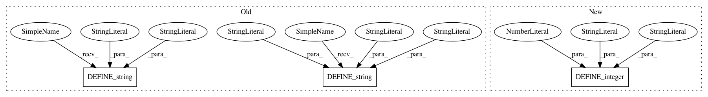

2402a3353f3d37778514e31ac7a45804b6e8a3be,tools/datasets/create_coco_tf_record.py,,,#,48
Before Change
flags.DEFINE_boolean("include_masks", False,
"Whether to include instance segmentations masks "
"(PNG encoded) in the result. default: False.")
flags.DEFINE_string("train_image_dir", "", "Training image directory.")
flags.DEFINE_string("val_image_dir", "", "Validation image directory.")
flags.DEFINE_string("test_image_dir", "", "Test image directory.")
flags.DEFINE_string("train_object_annotations_file", "", "")
flags.DEFINE_string("val_object_annotations_file", "", "")
flags.DEFINE_string("train_caption_annotations_file", "", "")
flags.DEFINE_string("val_caption_annotations_file", "", "")
After Change
flags.DEFINE_string("caption_annotations_file", "", "File containing image "
"captions.")
flags.DEFINE_string("output_file_prefix", "/tmp/train", "Path to output file")
flags.DEFINE_integer("num_shards", 32, "Number of shards for output file.")
FLAGS = flags.FLAGS
tf.logging.set_verbosity(tf.logging.INFO)
In pattern: SUPERPATTERN
Frequency: 3
Non-data size: 3
Instances
Project Name: tensorflow/tpu
Commit Name: 2402a3353f3d37778514e31ac7a45804b6e8a3be
Time: 2019-04-18
Author: pengchong@google.com
File Name: tools/datasets/create_coco_tf_record.py
Class Name:
Method Name:
Project Name: tensorflow/ranking
Commit Name: c19f183a2fda8739f9c45cda5f292293fcac347e
Time: 2020-06-01
Author: no-reply@google.com
File Name: tensorflow_ranking/examples/tf_ranking_canned_dnn.py
Class Name:
Method Name:
Project Name: tensorflow/cleverhans
Commit Name: 0adf9acd65a60b82566312ef19cb79e5cf4196a9
Time: 2017-02-17
Author: ngp5056@cse.psu.edu
File Name: tutorials/mnist_blackbox.py
Class Name:
Method Name: